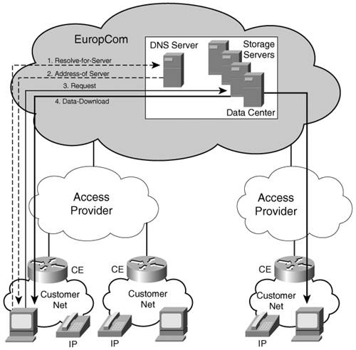
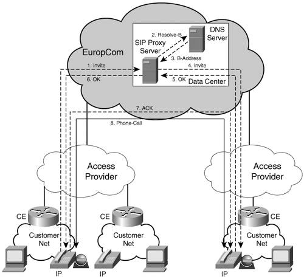

Network Design ObjectivesIn the IPv6 deployment project, the EuropCom objective is to enable transport over its backbone and deliver a range of IPv6 services to its customer base. EuropCom operates under the assumption that in the first 1 to 3 years, the IPv6 traffic in the core of the network will not exceed 20 percent of its total data traffic. However, for the long run, one of the network design goals is to avoid treating IPv6 differently than IPv4 traffic, but rather make it part of the overall QoS strategy currently in place for the IPv4 services. At the same time, EuropCom intends to minimize the impact of introducing IPv6 services, both in terms of network element upgrade (software/hardware/configuration) and operations. To achieve this goal, EuropCom will keep IPv4 and IPv6 topologies congruent in the core, and deploy dual-stack (IPv4 and IPv6) on the network edge, wherever IPv6 is required. In the MPLS core, EuropCom plans to transport IPv6 traffic over IPv4-signaled labeled paths. The EuropCom business model is to deploy VPNv6 services on PEs that currently support VPNv4, and IPv6 Internet access on PEs that currently provide IPv4 Internet access. PEs in L1 POPs will be enabled for IPv6 before the service launch. PEs at L2 and L3 POPs will be IPv6 enabled on demand (at first attached IPv6 customer). The same Label Switch Paths (LSPs) used for IPv4 will be used by IPv6 for both VPN and Internet access services: This can be achieved by using 6PE and 6VPE features, and carefully configuring BGP endpoints to match the existing IPv4 ones. This approach allows EuropCom to avoid making changes in its core configuration in terms of the deployed IGP, the Label Distribution Protocol, the addressing, and so on. EuropCom ServicesEuropCom has been delivering a growing set of services over its IPv4 infrastructure to service providers, enterprises of all sizes, and residential users. It now starts to receive more and more requests for IPv6-based services and IPv6 transport from its institutional customers:
Home users are generally not interested in the means by which services are delivered to them, yet there always are a few that are technology curious/savvy who would like to try new things. They have heard about web pages, radio stations, or game servers accessible over IPv6. EuropCom received multiple enquiries on the availability of IPv6 Internet access services. At the same time, EuropCom sees an IPv6 offering as a service differentiator and an opportunity to establish itself as a leader in this respect. For the most part, the IPv6 service requests received by EuropCom are similar to the existent IPv4 services: Internet access, layer 3 VPN, and DNS. The main challenges posed by these services are technical in nature; it is a matter of deploying them in a scalable manner with minimal impact on the IPv4 infrastructure. The IPv6 infrastructure is to be built, however, with a long-term perspective in mind and not simply to address small market demands on an ad-hoc basis with minimum investments. EuropCom understands the benefits and the opportunities offered by IPv6, thus making it part of its development strategy. EuropCom also plans to capitalize on the IPv6 awareness raised by the European Union and deploy new IPv6 services to differentiate itself from the competition. Therefore, it intends to make the most of an IPv6 infrastructure by developing and experimenting with new services. These new services would add to the technical challenges of deployment and the challenges of developing viable business models for them. The IPv6-based services will be kept independent of the IPv4 ones except for the network infrastructure resources that are being shared. Table 13-1 summarizes EuropCom planned offering. The first three service names are considered basic services, although the remaining names are considered value-added services.
This section reviews EuropCom's current and planned services along with some of their requirements. The IPv6 infrastructure is designed to meet these requirements. Internet AccessThe original business model of EuropCom was to provide Internet access (IA) to service providers, Enterprises of all sizes and residences. It reaches its institutional customers through network access and transit providers or direct peering:
The details of EuropCom access layer layout are presented in the "Network Design" section of this chapter. EuropCom does not own the last mile to its residential customers, so it relies on access providers to reach them:
In both these scenarios EuropCom Customer Edge (CE) routers represent the layer 3 gateway for the residential customers. This implies the fact that EuropCom is responsible for address assignment and management. Note The L2TP and PPP IPv6 access options were discussed in Chapter 3. For this case study, however, the focus is on the edge features enabled on the PE routers, which are presented with plain, unencapsulated IPv6 traffic. Other service and content providers can also choose to use EuropCom IA services by peering with EuropCom at various POPs through OC-3, OC-48, Gigabit or 10 Gigabit Ethernet interface. Alongside its existent IPv4 Internet access service, EuropCom intends to offer its customers IPv6 Internet access at an additional charge of 10 euros (~12 dollars) to the regular monthly subscription. L3VPNThe VPNv6 service will be offered to existent IPv4 VPN customers. In addition, IPv6 Internet access will be offered to VPN customers. Carrier Supporting CarrierThe Carrier Supporting Carrier (CsC) mechanism is commonly used by service providers to provide transport services for customer service providers (or carriers). Two types of customers will take advantage of this service:
DNS ServicesEuropCom provides DNS services for its IPv4 customers. This service becomes even more important to support the IPv6 customers; it is more difficult to remember IPv6 addresses than the IPv4 ones. Alongside all its uses with the IPv6 applications, similar to the IPv4 applications, DNS plays a particularly important role in deploying the peer-to-peer applications made available with IPv6. The DNS service is used by all the remaining services discussed in this section. The DNS servers are upgraded in EuropCom data center, and AAAA records are added to the A records as needed. Content Hosting/StorageBecause EuroCom is aware of the fact that the content currently available on the IPv6 Internet lacks richness, EuropCom bundles in the IPv6 IA service subscription a new content hosting and storage service over IPv6. This service can be used by the customers in several different ways:
To support these new services, EuropCom set up a set of storage resources in its data center along with the necessary infrastructure (Figure 13-3). Figure 13-3. Content Hosting/Storage ServiceEuropCom plans to continue experimenting with several other service offerings that leverage its storage resources. It intends to partner with multimedia companies to deliver content such as movies and video for an additional subscription fee. Voice over IPResidential VoIP has seen lately a significant increase in its rate of adoption. It is now offered commonly as a second-line service to users with broadband access. With the availability of reliable IPv6 unicast transport, EuropCom saw it technically feasible to consider deploying VoIPv6 as an added-value service. In fact, VoIPv6 is often touted by some as the killer application that would push for the mass adoption of IPv6. In its trial phase, the VoIPv6 service allows for on-net to on-net calls between IPv6 customers of EuropCom only. The enticing aspect of the service is that customers have the option of purchasing from a EuropCom-authorized vendor video phones. This feature also allows EuropCom to advertise the service to its business customers who could use it for intercampus communication. Such features differentiate the VoIPv6 service from the VoIPv4 service that is aggressively being deployed by EuropCom. EuropCom decided to offer a Session Initiation Protocol (SIP; RFC 2543)-based voice service. The service design is similar to the VoIPv4 one. To support this service, EuropCom set up a SIP Registrar and a SIP proxy server in its data center. Figure 13-4 shows the setup of a VoIPv6 call in this environment. Figure 13-4. VoIPv6 ServiceThe more technical-savvy customers can, of course, set up direct calls between themselves, in which case they leverage only the DNS resources offered by EuropCom. For business customers, EuropCom is also piloting a "Managed Video VoIPv6 Service" that meets certain service-level agreements at an additional charge. From a transport perspective, voice traffic has different network performance requirements than data traffic, as shown in Table 13-2.
EuropCom decided to deploy IPv6 quality of service (QoS) at the network edge from the beginning to ready its network for time- and delay-sensitive applications. This enables it to control the quality of the VoIPv6 service provided to businesses. On the other hand, EuropCom has no control over the infrastructure used by wholesale access providers, which limits its control on the service quality it offers to residential customers. For the most part, this is not considered an issue in the beginning, but the quality of service will be monitored as the number of subscribers increases. The adoption of the service will shape EuropCom future plans for expansion. These plans also include the deployment of gateways to the PSTN network that will allow for on-net to off-net calls, thus significantly increasing the value of the service. Peer-to-Peer Applications and Other ServicesOne of the challenges EuropCom faces in the initial IPv6 deployment phase is to quickly increase its IPv6 customer base to pay for its investments in the deployment. Part of EuropCom strategy to achieve this is to offer end-to-end solutions that go a bit beyond its IPv4 model. Setting up services such as content delivery or VoIP is an example of this strategy. With the same goal in mind (promoting IPv6 utilization through its core network), EuropCom plans to provide to its customer base guidance and support for applications and services that are transparent to the core network but will drive up IPv6 adoption. Two sets of services/applications are perceived by EuropCom as promising IPv6 enablers: peer-to-peer applications, and IPv6 mobility. Peer-to-peer applications are a complex service concept as far as EuropCom is concerned. They are not services that it can offer and charge, and because it does not own the software, it cannot distribute it. At the same time, these applications are expected to drive IPv6 adoption and generate more IPv6 traffic through the EuropCom backbone. EuropCom will promote these applications by testing, referencing, and rating them on its IPv6 website. The current list of EuropCom "Top 4" shows that the most recommended peer-to-peer applications are the following:
EuropCom set up a message board that users and its staff can contribute to with tips on installing and using these applications. |